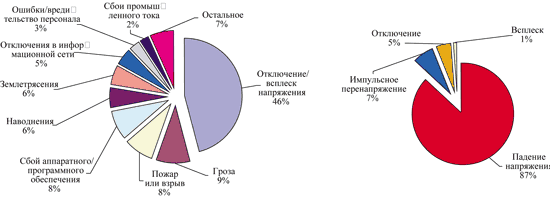
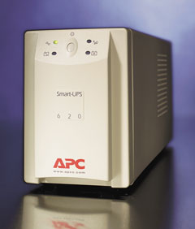

Вся современная техника работает с преобразованием электрической энергии, поэтому так важна стабильность электропитания. Напряжение, имеющее на картинках четкую синусоидальную форму, в обычной розетке искажено различными наводками: сказывается емкость и индуктивность линий электропередачи, ВЧ-помехи, наведенные в основном искрящими контактами (электродвигатели), и импульсные помехи, вызванные отключением и подключением мощной нагрузки (холодильники, сварочные аппараты, электроприводы лифтов). Реалии нашей страны - пониженное или повышенное напряжение питания, а нередко и вовсе его отключение. ГОСТ 13109-87 определяет следующие параметры сетевого напряжения: напряжение 220 В ± 10%; частота 50 Гц ± 1 Гц; коэффициент нелинейных искажений формы напряжения <8% (длительно) и <12% (кратковременно). По статистике же компании IBM для американских сетей, средний компьютер сталкивается с проблемами электропитания 120 раз в месяц.
Немного статистики | |
| Причины потери данных | Основные виды сбоев в электросети |
|  | |
|
Источник: компания APC
|
|
Как же обезопасить дорогостоящую технику? Это не так уж сложно. Сначала следует проверить состояние электросети: особенно это актуально для старых домов, где проводка не рассчитана на современные мощные электроприборы; кроме того, для корректной работы им требуется заземление. Для вычислительной техники отсутствие заземления приводит к образованию потенциала на корпусе компьютера и ощутимым ударам током, а при наличии локальной сети - к сгоранию сетевых карт. Хотелось бы подчеркнуть, что прокладывать и модернизировать электросеть может только профессиональный электрик.
Первый рубеж защиты образуют сетевые фильтры. Подчеркнем: они работают только при наличии заземления. Обычно фильтр включает в себя дроссель и несколько емкостей (они подавляют ВЧ-помехи), варисторы для подавления импульсных помех, а также электронный предохранитель. На коробке фильтра должно быть написано, с чем он борется. В России фильтры должны отвечать ГОСТу Р 50745-95 (ослабление импульсных помех) и ГОСТу 13661-92 (ослабление ВЧ-помех). Хороший фильтр не может стоить дешево, цены на них начинаются с 15 долл. (все, что дешевле, - это, скорее всего, просто удлинитель).
Стабилизаторы представляют собой развитие фильтров, сейчас их часто называют сетевыми кондиционерами. Самый древний их тип - феррорезонансные стабилизаторы (помните тяжеленные ящики, к которым подключались старые телевизоры?). Их работа основана на том, что энергия запасается в сердечнике мощного дросселя, и если напряжение отклоняется от номинала, то специальная обмотка компенсирует это. Недостаток такой схемы - искажение выходного напряжения. Этим в той или иной степени грешат все стабилизаторы. Хотя большая часть техники имеет импульсные блоки питания и не предъявляет особых требований к форме напряжения, такие искажения сильно сказываются на работе электродвигателей (они греются) и на качестве звучания аудиоаппаратуры.
Наконец, последний рубеж - источники бесперебойного питания (ИБП, или UPS). Они используются, когда важно обеспечить непрерывную работу техники: сервера, да и просто любого компьютера, который работает с важными данными. Существуют три различных типа ИБП, но общий принцип действия у них схож: входное напряжение анализируется, корректируется, фильтруется и отдается в нагрузку, а если оно вышло за пределы стабилизации, ИБП переходит на питание от батарей и становится генератором напряжения.
Любая электрическая нагрузка характеризуется коэффициентом мощности (другое название - косинус ). Угол - это угол сдвига фаз вектора напряжения и вектора тока. Косинус = 1 только у чисто резистивной нагрузки, например, электролампочки. Импульсные блоки питания имеют сильную реактивную составляющую, в них напряжение питания выпрямляется диодным мостом, а он потребляет энергию импульсами тока, что эквивалентно емкостной нагрузке. Обычный же трансформаторный блок питания эквивалентен индуктивной нагрузке, типичное значение коэффициента - 0,7.
Поэтому в электротехнике выделяют три вида мощности: полная (обозначается обычно буквой S и измеряется в вольтамперах) и две ее составляющие - активная и реактивная. Активная обозначается буквой P и измеряется в ваттах (Вт); вычисляется она как произведение полной мощности на косинус угла F:
P = S· cos(F);
реактивная составляющая, обозначаемая буквой Q, представляет собой другой катет прямоугольного треугольника:
Q = S· sin (F).
Она измеряется в вар (вольтампер реактивный).
Производители часто указывают полную мощность, которую для перевода в активную надо умножать на 0,7. Кроме того, не надо забывать про кпд блока питания. Производители также рекомендуют не загружать ИБП более чем на 80% от максимальной нагрузки, чтобы он не выключался или не переходил на батареи при включении нагрузки с повышенным пусковым током, поэтому мощность ИБП надо выбирать с запасом. Иначе говоря, для блока питания мощностью 250 Вт нужен ИБП мощностью не менее 420 В.А. Определившись с мощностью, нужно выбрать тип ИБП по наилучшему соотношению цена/качество. Рассмотрим подробнее типы архитектур ИБП.
Off-line (Stand-By)
Источники этого типа предназначены для питания нагрузки в течение непродолжительного времени (около 10 мин) при пропадании напряжения в электросети. В нормальном режиме работы питание нагрузки осуществляется отфильтрованным входным сетевым напряжением, батарея при этом заряжается. При нестабильности или исчезновении напряжения в сети происходит переключение на резервную схему питания. Преимущества схемы Off-line заключаются в ее простоте и дешевизне, а недостатки - в отсутствии стабилизации входного напряжения при работе в нормальном режиме и наличии некоторого времени переключения (порядка 4 мс) при переходе в аварийный режим работы. Схема Off-line не позволяет защищать нагрузку при длительном падении или увеличении напряжения питающей сети. Это исключительно бюджетное решение.
Модели, построенные по такой схеме, выпускают фирмы APC (серии Back-UPS и Back-UPS Pro), Elteco (серия EM), OptiUPS (серия VS).
Line-interactive
Данная схема отличается от Off-line наличием линейного стабилизатора (бустера) на базе автотрансформатора с переключаемыми отводами. Система управления ИБП анализирует входное напряжение и, если оно выходит за допустимые пределы, пытается скорректировать величину напряжения, переключая отводы автотрансформатора (что увеличивает или уменьшает напряжение на выходе ИБП по отношению к входному). Полоса регулировки, как правило, имеет ширину +-20%. После выхода из коридора регулировки напряжения автотрансформатором ИБП переходит на питание нагрузки от батарей. Время переключения, как и в предыдущем случае, около 4 мс. Схема Line-interactive являет собой удачный компромисс между дорогостоящими системами On-line и примитивными Off-line. Эффективность защиты для ИБП этого типа - около 98%.
Благодаря такой структуре ИБП реже переходит на работу от батарей, что продлевает срок их службы; во многих случаях при уменьшении или увеличении напряжения в сети ИБП вообще не переходит на работу от батарей; автотрансформатор выполняет роль дополнительного сетевого фильтра, благодаря высокой индуктивности эффективно подавляя импульсные и высокочастотные помехи.
Модели, построенные по такой схеме, выпускают фирмы APC (Smart, Matrix), NeuHaus (серия Smart-Line), Liebert Corporation (серия PowerSure), MGE UPS Systems (серии PowerSure и Pulsar EL, ESV+), PowerCom (серии King и King Pro), PowerMan (BackPro и BackPro Plus), Fuden (серия NetStar), OptiUPS (серии E/ES и PS/PS-RM), Elteco (серия EM-A).
On-line (двойного преобразования)
Принцип работы ИБП этого типа следующий: входное напряжение поступает на выпрямитель, стабилизируется, далее постоянное напряжение поступает на инвертор (одновременно подзаряжая батарею) и преобразуется инвертором в переменное напряжение. Особенность данных ИБП - дополнительный режим работы bypass (обход). В этом режиме нагрузка питается непосредственно отфильтрованным входным сетевым напряжением, а на bypass переключается при перегрузках на выходе ИБП (например, короткое замыкание, перегрев) без разрыва, помехи при этом фильтруются LC-фильтром. Такие ИБП обеспечивают питание нагрузки при пропадании напряжения в сети, полную фильтрацию всех помех, а также стабилизацию выходного напряжения при колебаниях амплитуды входного в диапазоне 140-280 В без перехода на аккумуляторные батареи. При работе в нормальном режиме батарея заряжается напряжением стабилизатора, а в аварийном осуществляет питание инвертора.
Таким образом, в ИБП схемы On-line при любом режиме сетевое напряжение проходит две ступени преобразования. Благодаря этому превосходно фильтруются сетевые помехи и не пропускаются в электросеть помехи, создаваемые нагрузкой. При возникновении аварии в сети не требуется время для переключения на батареи, поскольку батарея всегда подключена к инвертору и он продолжает генерировать сигнал без фазовых скачков, что особенно важно при питании чувствительных к импульсным помехам устройств.
Недостатки схемы On-line - относительная сложность и более высокая стоимость, а также дополнительные энергозатраты на двойное преобразование, снижающие общий кпд системы: если у ИБП Off-line и Line-interactive кпд около 95%, то у On-line он составляет 85%. Тем не менее ИБП On-line - это самое совершенное на сегодняшний день решение, позволяющее полностью защитить нагрузку от всех существующих типов неполадок сетевого напряжения. Модели, построенные по такой схеме, выпускают фирмы Liebert Corporation (серия UPStation), MGE UPS (серия Pulsar EX), PowerWare (серия PowerWare Prestige), Elteco (серия PS).
Еще один параметр ИБП - форма генерируемого напряжения. В дешевых моделях она близка к меандру, переходя в трапецию и далее в синусоиду. Напряжение, близкое по форме к синусоидальному, генерируют только ИБП типа On-line и мощные аппараты Line-interactive, где для аппроксимации используют широтно-импульсную модуляцию (нечто подобное применяется в усилителях класса Д).
Семейство АРС Smart UPS
В качестве примера рассмотрим подробнее популярное семейство компании АРС - Smart UPS, запущенное в производство еще в 1998 г. Серия включает три группы: Smart UPS, Smart UPS Rack Mount (RM) и Smart UPS DP. Первые две выпускаются мощностью до 5 кВт и отличаются фактически только конструктивом (RM - вариант для монтажа в стойку). Smart UPS DP - более мощные устройства (от 4 до 10 кВт); конструктивно это шкафы. Особенность данной группы - корректировка коэффициента входной мощности (PFC) до 1; иными словами, для сети это чисто активная нагрузка. Семейство позиционируется как средство защиты для серверов и вычислительных сетей, но младшие модели очень популярны на рынке SOHO.
Из представителей этого семейства широко распространена модель АРС Smart UPS 620; ею, к примеру, комплектуются рабочие станции IBM. В данной модели применена система Double SmartBoost, обеспечивающая хорошую коррекцию при падении напряжения до 30% от номинала, что позволяет Smart UPS 620 нормально работать даже тогда, когда другие ИБП переходят на батарею. Другая система, SmartTrim, обеспечивает понижение, даже если напряжение сильно повысилось. Это позволяет работать при колебаниях напряжения сети в диапазоне от 165 до 283 В, что удобно в районах, где напряжение стабильно ниже нормы (например, в сельской местности).
|  | ИБП АРС Smart UPS 620.
|
Кроме того, Smart UPS 620 имеет встроенные фильтры для защиты периферийных устройств (принтеров, сканеров и факсов), для которых обычно приходится покупать отдельные сетевые фильтры, поскольку они потребляют сравнительно большую мощность. Самая верхняя розетка подключена в обход схемы бесперебойного питания, обеспечивая только фильтрацию и защиту от перенапряжения. Она рассчитана на 300 Вт и находится под напряжением все время, пока ИБП подключен к сети, даже если сам он выключен. Лазерные принтеры можно подключать только к этой розетке - их подключение к защищенным выходам запрещено инструкцией. То же справедливо и для многих других мощных устройств, в начале работы потребляющих значительный ток, что вызывает перегрузку ИБП (таковы, например, устройства с электродвигателями).
Данная модель имеет также встроенную систему подавления высоковольтных разрядов и электромагнитных помех в линиях передач данных для стандарта 10Base-T и 100Base-TX, получившую одобрение компании Novell в качестве хорошей защиты сети.
Наличие высокоточной системы зарядки батарей с автоматическим определением уровня заряда (ИБП автоматически тестируется каждые две недели) дополнительно повышает надежность устройства. Предусмотрена защита от избыточной зарядки, а также непрерывная зарядка, что увеличивает срок службы батарей. Когда состояние батарей близко к выработанному, на передней панели ИБП появляется предупреждение. Заменять батареи можно прямо в процессе работы; для этого не требуется отключать нагрузку, но в целях безопасности желательно проводить такие работы при обесточенном оборудовании. Надо отметить, что батареи редко выходят из строя, средний срок их службы - от 4 до 5 лет.
На передней панели ИБП расположены индикаторы "Сеть" (индуцируется включение), "Заменить батарею", "Питание от батареи" (его дублирует зуммер) и "Перегрузка".
В семействе Smart UPS лишь модели 420 и 620 имеют встроенные фильтры и оснащены технологией Double SmartBoost, другие модели обеспечивают регулировку только на 15%. Зато они генерируют напряжение, более близкое к чистой синусоиде, и имеют дополнительные индикаторы, повышающие наглядность: они показывают уровень входного напряжения и мощность, отдаваемую ИБП. Кроме того, можно использовать карты расширения, например, для измерения температуры аккумуляторов.
Как и большинство других моделей компании АРС, Smart UPS 620 комплектуется ПО PowerChute Plus, которое обеспечивает гибкое управление питанием. Этот программный пакет может автоматически отключать систему и выполняет множество других важных функций управления и диагностики. PowerChute сертифицирован для работы с широким спектром ОС: это версии Windows 95/98/NT, Novell NetWare, UNIX и Linux.
Если сбой электропитания произошел в праздничный день или ночью, может случиться, что батареи ИБП истощатся и произойдет потеря данных. В такой ситуации PowerChute корректно выключит систему с сохранением всей информации на жестком диске и автоматически перезагрузит ее после возвращения напряжения сети в нормальный режим. При этом ПО может одновременно управлять сразу восемью компьютерами с разными ОС.
Кроме того, PowerChute проводит тестирование ИБП, в том числе и по расписанию; предупреждает о разряде батарей и о других неисправностях; отображает графически рабочие параметры (состояние ИБП, время работы батарей, мощность нагрузки, амплитуда входного напряжения) и записывает их в журнал, куда попадают и данные периодических замеров характеристик входного напряжения (амплитуды и частоты). Программа поддерживает дистанционное управление - рассылку электронной почты с информацией об аварии, с обращением напрямую к SNMP-серверу и управление каждым ИБП в локальной сети. PowerChute позволяет задать несколько алгоритмов действий, включая даже запуск других программ.
ИБП Smart UPS 620 имеют двухлетнюю гарантию (в нее включена исправность батарей) и сертифицированы "Ростестом".
Дополнительная информация о производителях ИБП | |
| APC | http://www.apc.ru |
| Elteco | http://www.elteco.ru |
| Fuden | http://www.fuden.com |
| Liebert Corporation | http://www.liebert.com |
| MGE UPS Systems | http://www.mgeups.ru |
| NeuHaus | http://www.nhs.ru |
| OptiUPS | http://www.optiups.ru |
| PowerCom | http://www.powercom-ups.ru |
| PowerMan | http://www.powerman.ru |
| PowerWare | http://www.powerware.ru |